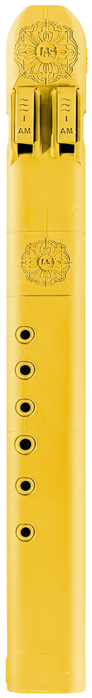

1
Saved
Leave every hole open.
Key 0
The drone
Play only the drone barrel. Leave the melody silent.
Clear
Flute Hero
Settings
Test
Off
The microphone is off, so there is nothing to hear yet.
Tap along to set the tempo.